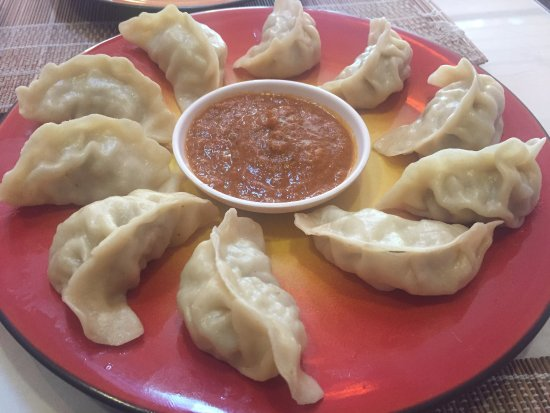
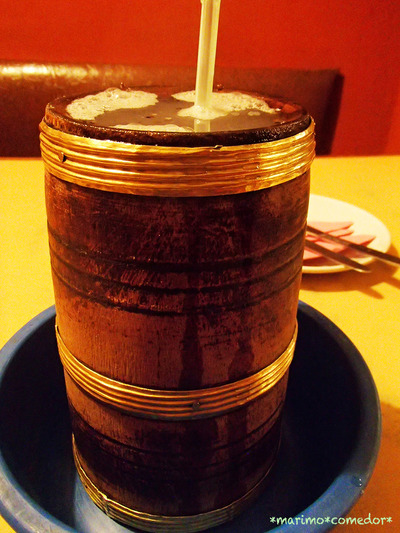

ネパールで一般的なためネパール料理と思っている日本人も多く、実際ネパール料理店のメニューに含まれるが、本来はチベット料理と受け止めるべきである。
町で良く食べられる料理で、価格は40ルピーほどで一皿。
クリーム色にちょっと茶色系統を混ぜたたれで食べる。
トマト色をしたピリ辛のソースもある。

トンバはネパール東部の山岳地帯と、近隣のダージリンとシッキムで見つかったキビベースのアルコール飲料です。
トンバはネパール東部のリンブ族にとって文化的および宗教的に重要です。
タプレジュンはトンバを飲むための究極の目的地です。
トンバを提供することは、リンブの人々の間でのゲストへの敬意の象徴であり、特別な行事や祭りの重要な飲み物でもあります。